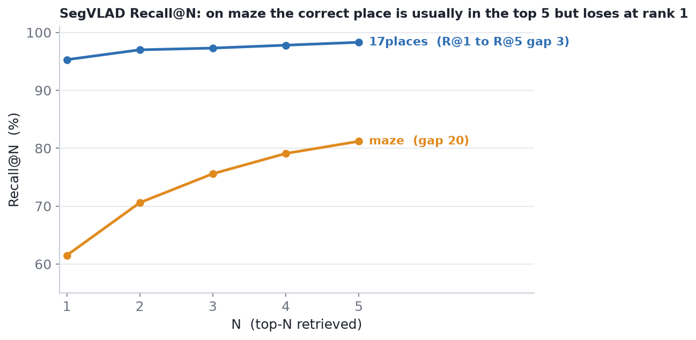

Visual place recognition (VPR) is the problem of matching a photograph to the images in a reference database that were taken at the same place. I study the indoor case, which is harder than the outdoor one and far less settled in how people evaluate it. The project comes in two halves.
The two halves feed each other. The survey is where I noticed that indoor VPR has no shared evaluation protocol and that anonymisation almost never gets documented; the audit is where I went and measured both on real datasets.
The retrieval task. Each image becomes a descriptor, a single vector. For a query, the database images are ranked by descriptor similarity. The query is correct at Recall@N if at least one of the top N ranked images is a true same-place image, called a positive. Which database images count as positives is set by a ground truth: usually a distance threshold in the world (say, within r metres of the query), sometimes a window of neighbouring frame indices.
Why the ground truth matters so much. Recall is entirely at the mercy of how you define a positive. Widen the radius and more database images qualify, so recall goes up, but so does the score a random ranker would get. That is why every recall in this project is reported next to a shuffled-retriever floor.
Indoor VPR is a different problem from outdoor VPR, in five concrete ways:
The survey covers roughly twenty-five datasets from 2007 to 2025 and sorts them into a taxonomy: outdoor (large-scale and long-term, multi-modal and range-based, urban retrieval, compact baselines), indoor (static and relocalization, repeat-visit and change-aware, text-assisted and repetitive-structure), pedestrian-centric, and adjacent localization benchmarks. A sensor-modality matrix tracks RGB, depth, thermal, LiDAR, radar, GPS or IMU, and, as a newer modality, scene text.
The part that mattered most for the rest of the project is a list of six gaps, which the benchmarking then goes after:
The five indoor datasets I use in Part 2 sit inside this taxonomy as follows.
| Dataset | Year | Scale | Indoor challenge | Ground truth |
|---|---|---|---|---|
| 17-Places | 2013 | 406 images | varied indoor scenes (legacy) | frame-index window |
| Baidu Mall | 2017 | 689 reference images | dynamic pedestrians | place labels / position threshold |
| InLoc | 2018 | 9,972 database, 356 query | building scale, five floors | 6-DoF pose (verified) |
| NYC-Indoor-VPR | 2024 | about 36,000 images | dense pedestrians, one year | semi-automatic topometric |
| Maze-with-Text | 2025 | panoramic, 5 floors | repetitive hallways, scene text | floor and zone labels |
Full per-dataset entries, the release timeline, the sensor-modality matrix, and the evaluation-protocol table are in the survey document: Dataset Survey (PDF).
I compare two retrieval methods.
exp0_global_SegLoc_VLAD_PCA_o3 (neighbour-aggregation order 3 with PCA) and the pretrained
backbone (PreT).Hardware. Full SAM and DINO extraction ran on the Phoenix server (an RTX A4000). I used a local RTX 4050 with 6 GB for MegaLoc inference and for validation, since MegaLoc skips the segmentation step and fits comfortably in 6 GB.
The four datasets.
| Dataset | Reference | Query | What it tests |
|---|---|---|---|
| 17-Places | 406 | 406 | varied indoor scenes, frame-window ground truth |
| Maze-with-Text | 8,540 | 1,305 | repetitive five-floor building with scene text |
| Baidu Mall | 689 | 2,292 | shopping mall, position threshold |
| InLoc | 9,972 | 356 | building scale, 6-DoF pose ground truth |
With author-precomputed features for stages 1 to 3 and a local stage 4 using the map vocabulary, the run reproduces the published 17-Places numbers. That was the point of running it: check the pipeline against a known result before trusting it on anything new.
| 17-Places (406 queries) | R@1 | R@2 | R@3 | R@4 | R@5 |
|---|---|---|---|---|---|
| SegVLAD (this work) | 95.3 | 97.0 | 97.3 | 97.8 | 98.3 |
| Published (Garg et al.) | 95.3 | 98.0 |
This is a full pipeline run from raw images on Phoenix, with the domain vocabulary and the TextInPlace protocol (positives are same-floor and within 10 m). The number is new, since Maze-with-Text does not appear in the SegVLAD paper.
| Maze-with-Text (1,305 queries) | R@1 | R@2 | R@3 | R@4 | R@5 |
|---|---|---|---|---|---|
| SegVLAD-PreT (this work) | 61.5 | 70.6 | 75.6 | 79.1 | 81.2 |
Set against the published baselines from the TextInPlace paper (all floors), SegVLAD at Recall@1 lands inside the appearance-only band rather than above it:
| Method | R@1 | R@5 |
|---|---|---|
| Appearance-only (SALAD, CricaVPR, MixVPR, BoQ) | 57.7 to 67.5 | 75.6 to 84.1 |
| SegVLAD-PreT (this work) | 61.5 | 81.2 |
| TextInPlace (adds scene-text re-ranking) | 85.4 | 93.9 |
A few things stand out.

The failure mode is cross-floor confusion. A typical rank-1 miss is a same-looking corridor or pillar on the wrong floor, the fifth confused with the second. One thing to keep in mind when reading the montages in the report: the maze ground truth is position-only and orientation-agnostic, so an image that counts as a valid positive can face a different direction from the query and look quite different because of it. That is the 10 m radius protocol doing its thing, not a labelling error. The full montages of rank-1 hits and misses are in the Benchmark Report (PDF).
MegaLoc reports a strong Baidu result. With the released model at its stated 322 by 322 inference resolution and the benchmark's stated 25 m ground-truth radius, the published number reproduces to within 0.1 point on the VPR-benchmark build of the dataset (5,207 database and 3,208 query images), with no parameter tuning. This build is a larger, differently packaged version of Baidu than the 689-image subset in the survey.
| Baidu-Mall (5,207 / 3,208) | Recall@1 | Recall@10 |
|---|---|---|
| Paper (Table 1) | 87.7 | 98.0 |
| This work, stated 25 m, no tuning | 87.75 | 97.97 |
An earlier attempt hit 87.7 on the 689-image subset, but only by sweeping the ground-truth radius until the number showed up. That is fitting a parameter to a target, not a reproduction. The real result came from running the benchmark's stated protocol on the build the paper actually used.
Both methods are scored under identical ground truth on each dataset, so the comparison is about the methods and not the protocol. Each Recall@1 is read next to a shuffled-retriever floor (mean over 10 seeds).
| Dataset | DB size | GT protocol | MegaLoc R@1 | SegVLAD R@1 | Shuffled floor R@1 |
|---|---|---|---|---|---|
| Baidu (VPR-benchmark) | 5,207 | 25 m | 87.75 | not run | 5.4 |
| 17-Places | 406 | index window (±15) | 94.58 | 95.30 | 6.7 |
| Maze-with-Text | 8,540 | 10 m (per floor) | 73.56 | 61.50 | 3.4 |
The shuffled floor depends only on the ground truth and the database, not on the method, so one column serves both. I did not run SegVLAD on the VPR-benchmark Baidu build. Recall@10 barely discriminates on the smaller sets, where a random ranker already clears 50%, so Recall@1 is the headline metric.

One caution I carry over from the audit: a between-method gap only means something when both methods used the same ground-truth radius. The MegaLoc and SegVLAD maze numbers here are both at 10 m; a difference in radius alone can manufacture a gap this size.
Two separate things show that a single recall number does not interpret itself indoors.
So I settled on one practice for the whole project: read recall against a chance floor, and take thresholds from each benchmark's stated protocol instead of picking whichever one produces a flattering result.
The Maze-with-Text benchmark anonymises people by replacing them with baked-in pure-white silhouettes. A connected-component detector over all 9,845 images finds the artifact in about 23% of both reference and query images (23.3% and 22.8% at the bimodal-valley threshold). Since the silhouettes sit on both sides of retrieval, they are a property of the corpus, not of any one method.

This is the survey's privacy gap showing up in practice. NYC-Indoor-VPR also uses white-pixel masking, while the NAVER LABS localisation datasets blur the upper body of each person instead. Every crowded-indoor dataset carries some anonymisation artifact; the form varies, and pure-white silhouettes probably hurt a segmentation-based method more than a global descriptor, since the segmenter gets handed a big uninformative blob.
Building a clean subset is harder than picking a threshold. A cut on white-blob size cannot guarantee a clean subset, because small distant silhouettes overlap genuinely clean bright windows on the same size axis. Getting there needs a shape-aware, context-aware detector followed by a visual audit of the survivors. Dropping masked references also cascades into the queries, since a query with no clean positive inside the radius can no longer be scored, and it leaves a sparser database, so any fair comparison needs a size-matched random-drop control.
MegaLoc's author argues that dropping the vertical coordinate and computing positives from horizontal distance alone is safe indoors, because you rarely credit a retrieval that shares a query's horizontal position but sits on a different floor. The trouble is that every common indoor benchmark (Baidu, 17-Places, single-building maze retrieval) is effectively single-storey, so the claim has never been testable. InLoc is multi-storey, which makes it the place where the claim can actually be falsified.
InLoc structure. The database has 9,972 cutouts from WUSTL RGB-D scans across five floors (CSE3, CSE4, CSE5, DUC1, DUC2), with verified per-floor cutout counts of 252, 2700, 2340, 1800, and 2880. The 356 iPhone 7 query photographs come from DUC1 and DUC2 only, so the other three floors act as pure confusers. Query ground-truth poses are withheld to an evaluation server, while the database cutout poses can be recovered from the dataset's alignment files.
The measurement. In a multi-storey building, how often does a horizontal-distance ground truth credit a retrieval that is physically on a different floor? Because the query poses are withheld, my planned design holds out a spatially separated set of database scans as pseudo-queries, which gives exact poses on both sides. A verification pass then tells genuine cross-floor visibility (an atrium view) apart from architectural doppelgangers (an identical corridor one floor up).
A candidate testbed. The NAVER LABS localisation datasets (a Hyundai department store over three floors, a Gangnam metro station over two) come with dense 6-DoF ground truth for training and validation queries, so query poses are available. They are a strong alternative to InLoc here, with the caveat that they blur upper bodies and need registration to download.
A storage incident set the current status. Partway through the full runs, the Phoenix
/scratch2 volume failed with I/O errors mid-process, and the extracted features, PCA models,
and intermediate results went with it. What survived on the laptop: code, fixes, model checkpoints, the
maze numbers, and the montages. Rough recompute cost is about 4 hours for Baidu, 13 for maze, and 13 for
InLoc, and the re-runs are stuck behind roughly 350 GB of scratch space.
Repository hardening happened along the way: removing a headless-unsafe tkinter import, atomic HDF5 writes (write to a temporary file, then rename), resumable and skippable pipeline stages, an image-extension filter that fixed an InLoc extraction crash, and a working InLoc mirror download.
A few reproducibility habits I kept throughout:
| Item | Result | Status |
|---|---|---|
| 17-Places (SegVLAD) | 95.3 / 98.3 | done, reproduces the paper |
| Maze-with-Text (SegVLAD) | 61.5 / 81.2 | done, full pipeline |
| Baidu (MegaLoc) | 87.75 / 97.97 | done, reproduces the paper |
| Baidu (SegVLAD) | not saved | PreT computed before data loss, recall not copied from log |
| InLoc | in progress | reference extraction done before loss; GT builder ready; cross-floor study designed |
| Storage | blocked | re-runs need about 350 GB of scratch |
Caveats. One configuration per completed dataset so far. The maze comparison against TextInPlace is not like-for-like, since training and backbone differ. Published table numbers are transcribed from their papers for context only.
@misc{jain2026indoorvpr,
title = {Auditing Indoor Visual Place Recognition: Ground-Truth Protocols and Evaluation Artifacts},
author = {Jain, Harshita},
year = {2026},
note = {Work in progress},
url = {https://harshitajain523.github.io/Indoor_VPR/}
}
@misc{jain2026vprsurvey,
title = {Visual Place Recognition: Dataset Landscape Survey},
author = {Jain, Harshita},
year = {2026}
}